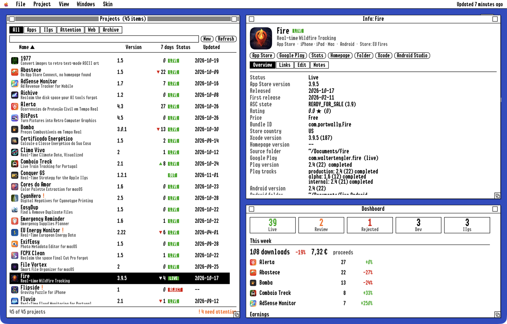

Wally's Manager
Every app you ship, in one retro desktop.
A project organizer for the Mac. It lists all your apps with their App Store version, review status, Xcode version, homepage and GitHub release, tells you which of them need attention, and keeps your Apple IIgs disk images one click away from booting in MAME.
macOS 15 or later Six skins Not released yet

What it shows
- Every project in one list. App Store apps, Mac apps sold elsewhere, Apple IIgs programs and plain websites, with icon, version, status and the date of the last release.
- Four versions side by side. The one live in the App Store, the one in your Xcode project, the one your homepage mentions, and the latest GitHub release.
- Review status. With an App Store Connect API key it shows Waiting for Review, In Review, Rejected and Ready for Sale, without opening the website.
- One click away. App Store page, homepage, GitHub, source folder and Xcode project, from every project.
- Set up in seconds. On first launch it reads your homepage folder and finds the App Store IDs, GitHub repos, versions and source folders by itself.
Needs attention
The Dashboard answers one question: what should I look at today?
- ! Xcode is at 3.0, but 2.22 is live: not submitted yet?
- ! Homepage shows 4.5, current is 4.6
- · Waiting for review 1.0
- !! 1 disk image missing on disk
- · No update for 214 days
The kinds of lines the Dashboard shows. Click one and the project it is about opens.
For the Apple IIgs
Software that never sees an App Store gets the same care.
- Disk images per project. Drop in .2mg, .po, .hdv, .dsk, .woz or .shk files. Mark one as the boot disk. A missing file is flagged, and Find… points it to where it went.
- Boot in MAME. One click starts the IIgs in MAME from your Ample install, with ROM 3, ROM 1 or ROM 0 and any extra arguments. Floppies go in the 3.5" drive, hard disk images on a CFFA2 card.
- Releases and places. The latest GitHub release, the ProDOS file type, and links to the sites where the program is published.
Where the numbers come from
- Your Mac: the homepage folder, your Xcode projects and your disk images. Nothing is copied or uploaded.
- Apple’s public App Store lookup for versions, dates, release notes, ratings and icons.
- GitHub’s API for the latest releases.
- App Store Connect, only if you add your own API key. The key stays in your Keychain.
No account, no tracking, no server of its own. The data lives in a file on your Mac.
Six skins
The whole app is drawn by the skin you pick: windows, menus, buttons, fonts and colours. So is this page. Click one to try it.
Scale 1× to 2×, CRT scanlines, an Amiga Guru Meditation for errors, a Norton Commander layout with F-keys in DOS, and a taskbar in Windows 95.
Interested?
Wally’s Manager is not released yet. If you ship apps and would use it, tell me: one email, no newsletter. I’ll write back when there is a beta to try.
The button opens your mail app with a few short questions: how many apps you have, which skin you’d pick, and what it’s worth to you.